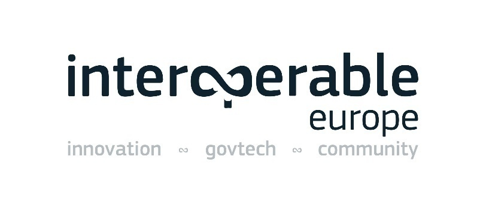

Digital Public Administration factsheet 2023
Germany
1 Interoperability State-of-Play 4
2 Digital Public Administration Political Communications 8
3 Digital Public Administration Legislation 16
4 Digital Public Administration Infrastructure 24
5 Digital Public Administration Governance 32
6 Cross-border Digital Public Administration Services 36
1
Interoperability State-of-Play
In 2017, the European Commission published the European Interoperability Framework (EIF) to give specific guidance on how to set up interoperable digital public services through a set of 47 recommendations divided in three pillars. The EIF Monitoring Mechanism (MM) was built on these pillars to evaluate the level of implementation of the framework within the Member States. Whereas during the previous, the MM relied upon three scoreboards, the 2022 edition includes an additional scoreboard on cross-border interoperability, assessing the level of implementation of 35 Recommendations. The mechanism is based on a set of 91 Key Performance Indicators (KPIs) clustered within the four scoreboards (Principles, Layers, Conceptual model and Cross-border interoperability), outlined below.
Source: European Interoperability Framework Monitoring Mechanism 2022
Each scoreboard breaks down the results into thematic areas (i.e. principles). The thematic areas are evaluated on a scale from one to four, where one means a lower level of implementation and four means a higher level of implementation. The graphs below show the result of the EIF MM data collection exercise for Germany in 2022, comparing it with the EU average as well as the performance of the country in 2021.
Source: European Interoperability Framework Monitoring Mechanism 2022
Germany’s results in Scoreboard 1 show an imbalanced level of implementation of the EIF Principles. Indeed, for the two Principles that were analysed (Principles 9 and 10) the results show a good implementation, with scores of four for Principle 10 (Administrative simplification) and three for Principle 9 (Multilingualism), in alignment with the EU average. Nonetheless, the lack of data for all the other Principles does not allow to have a good overall picture of the level of implementation of the EIF Principles in Germany.
Source: European Interoperability Framework Monitoring Mechanism 2022
The German results for the implementation of interoperability layers are also incomplete due to an absence of data in all the areas of Scoreboard 2. However, Germany has a very good implementation of recommendations relating to interoperability governance and semantic interoperability. A potential area of improvement is Recommendation 22 (KPI 42), with a score of one. To have a better performance on this recommendation, Germany should aim at better managing ICT standards and specifications to ensure interoperability.
Source: European Interoperability Framework Monitoring Mechanism 2022
Germany’s scores assessing the Conceptual Model in Scoreboard 3 show, as for the other scoreboards, a very incomplete picture. In the area where the recommendations are implemented (Open Data) Germany scores well, at the EU average with a score of 4. However, the absence of data for the rest of the recommendations hinders the analysis of the overall German score on the conceptual model.
Source: European Interoperability Framework Monitoring Mechanism 2022
Germany’s scores on this last scoreboard demonstrates, as for the others, an incomplete picture of its results on Cross-border Interoperability. For the three indicators for which the data is available, Germany meets the EU average, with a score of four for Open Data, and three for Principles 9 and 10. To improve its performance on this last Principle, Germany could allocate more efforts to simplify processes and use digital channels whenever appropriate for the delivery of cross-border eID, to respond promptly and with high quality to users’ requests and reduce the administrative burden on public administrations, businesses and citizens (Recommendation 80).
Additional information on Germany’s results on the EIF Monitoring Mechanism is available online through interactive dashboards.
Curious about the state-of-play on digital public administrations in this country? Please find here some relevant indicators and resources on this topic: |

2
Digital Public Administration Political Communications
Berlin Declaration on Digital Society and Value-Based Digital Government
The ministers responsible for digital transformation in the public administration of EU member states officially adopted the Berlin Declaration on Digital Society and Value-Based Digital Government at an online high-level conference in December 2020. The Berlin Declaration contains common guidelines on digital transformation in Europe, its impact on society and future opportunities.
In order to enable value-based digital transformation, the countries that signed the declaration have agreed to carry out concrete measures by 2024 regarding, among other things, the digital sovereignty of their administrations, the promotion of civil society participation, digital inclusion and self-determination. These measures are based on the common values and ethical principles which form the foundation of the European Union and include in particular the following:
 Federal Digital Strategy
Federal Digital Strategy
In August 2022, the Federal Ministry for Digital and Transport (BMDV) published its new Federal Digital Strategy (Digitalstrategie der Bundesregierung).The strategy succeeds the implementation of the Shaping Digitalisation (Digitalisierung gestalten) strategy of the previous administration. It serves as a guidebook for all digital policies and digitalisation strategies of the Federal ministries for the current legislative period. It defines ambitious and measurable goals the Federal Government wants to reach. The strategy also defines three key projects, which are the prerequisite to boost digital transformation:
These projects are essential for every digital policy measure planned and implemented by the ministries in their own responsibility. Progress is measured by a three-pillared monitoring process comprised of both quantitative and qualitative elements.
Third National Action Plan within the Open Government Partnership
In the framework of its participation in the Open Government Partnership (OGP), Germany develops national action plans on open government every two years, in accordance with the OGP rules and guidelines. They are the product of a co-creation process between government and civil society resulting in relevant commitments to foster transparency, participation, accountability and other elements of government openness. The German federal government submitted a third National Action Plan (NAP) in the summer of 2021 after a public consultation period lasting from March until June 2021. The NAP contains eleven commitments by the federal government (including two in cooperation with länder governments) and three individual commitments by two länder, covering such areas as access to legal information, open data, participation in infrastructure planning or open-source software for public administration. The Action Plan can be found here.
Strategic Alignment of the German IT Planning Council
The IT Planning Council’s future efforts as well as its operational structures are organised around a select number of multi-year strategic focus areas (https://www.it-planungsrat.de/beschluss/beschluss-2022-42). These focus areas shape the cross-functional initiatives of the IT Planning Council which reflect current trends as well as strategic questions concerning the public administration’s digitisation efforts. They bundle individual ventures and create an increased focus towards a common goal so that the IT Planning Council, supported by additional instruments, is able to make decisions more quickly, collaborate more efficiently, and expand the impact it generates. This strategy covers:
IT Consolidation Programme of the German Federal Government
The German cabinet decided in the summer 2015 to substantially modernise the federal government in the IT department. Consolidating IT at federal level will serve several aims, namely: (i) ensure information security in an increasingly complex IT environment; (ii) maintain sovereignty and control over federal IT also in the future; (iii) respond swiftly to technological innovations; (iv) ensure effective, efficient, stable and future-proof operations; and (v) enable the government to remain an attractive employer for IT experts. Data of the federal administration must be comprehensively protected and secured against misuse. Until 2022, IT consolidation has followed three lines of action: consolidating operations, consolidating services, and centralising procurement.
 IT Strategy of the Federal Administration
IT Strategy of the Federal Administration
The IT Strategy of the Federal Administration (IT-Strategie der Bundesverwaltung Version 2022) defines ten cross-departmental goals for strategic IT development. With six overarching fields of action, the strategy sets priorities for the further development of IT and thus forms the basis for prioritising existing and future IT measures. To this end, the federal administration's IT strategy takes into account specifications and decisions at European as well as at national level.
 Data Strategy of the German Federal Government
Data Strategy of the German Federal Government
The Federal Ministry for Digital and Transport, the Federal Ministry of the Interior and the Federal Ministry of Economic Affairs and Climate Action are currently working on the Federal Government's new data strategy. The focus of the strategy is going to be data use, data sharing and a new data culture. It is to be presented by the second quarter of 2023.
Once-Only Principle
A publication of the IT Planning Council on the Once-Only principle (Das Once-Only Prinzip – Potenziale für Bürger, Unternehmen und Verwaltung) from 2017 analysed the situation of eGovernment, with citizens and business having to provide the same pieces of information several times to different public authorities. Besides the description of the current situation, the publication compares the situation in different countries and offers a selection of best practices. In addition, the publication points out four major opportunities that the Once-Only principle provides for citizens and the administration in Germany.
In the case of citizens:
In the case of public administration:
Finally, the publication highlights that in Germany the eGovernment Law constitutes the legal framework to fully establish the Once-Only principle.
In March 2021, the IT Planning Council published a roadmap on ‘Modernisation of registers: vision and implementation planning’ . The document presents a systematic approach to modernising the German register landscape. This is key to enabling digital services following the Once-Only principle.
Architectural Guideline for Federal IT
With the Architectural Guideline for Federal IT (Architekturrichtlinie für die IT des Bundes Version 2022), the federal government aimed to provide comprehensive IT architecture management in order to achieve IT consolidation in Germany. To do so, binding architecture guidelines, which were subjected to ongoing development, were defined for all areas affected by IT consolidation in the federal government.
Open Data Strategy of the German Federal Government
On 6 July 2021, the federal cabinet adopted the Open Data Strategy of the German Federal Government. The overarching data policy framework for the open data strategy sets out the German government’s data strategy and its objectives, which also include open data.
Over the next five years, the Open Data Strategy will cover three areas of action with a total of 68 measures taken by various federal ministries and federal authorities to improve data provision, promote data skills and establish a data culture in the federal administration to improve the quality and usability of data provided.
Broadband Atlas
The Broadband Atlas (Breitbandatlas) is the key information medium for broadband coverage in Germany. The Broadband Atlas is updated regularly and is available free of charge to all interested citizens. Interactive maps show which bandwidth and technologies are available for data transmission in squares of 100 x 100m. Furthermore, geo-referenced information on funding areas are published, added by information concerning the status of the relevant broadband and mobile funding scheme. Data transmission of publicly available information is possible. The Broadband Atlas is available under: https://www.gigabitgrundbuch.bund.de.
Open Government Partnership
Germany is part of the Open Government Partnership (OGP) initiative, in which the governments of 78 countries (as well as 76 local governments) have committed to promoting the principles of Open Government. Germany joined the OGP in December 2016 and adopted its first National Action Plan in August 2016, the second in September 2019 and the current third in August 2021.
Geoinformation Strategy
The National Geoinformation Strategy (Nationale Geoinformations-Strategie) was adopted by representatives of the federal administration, federal State representatives and representatives of local authorities in 2015. The strategy follows the aim to secure basic services, facilitate multiple use and promote innovation for a forward-looking and sustainable geographic information policy. Geoinformation is used for spatial decision-making processes in all social groups, is economically profitable and brings added value.
Personalausweisportal: the eID Card Website
The Federal Ministry of the Interior and Community publishes on a dedicated website information regarding the operation of the German eID Card. There is information available for citizens, businesses and local administrations. In addition, the website contains news about new possible utilisations of the eID and a brochure with background information about it.
Since January 2021, the German federal identification and authentication component has met the requirements of the European Regulation on Electronic Identification and Trust Services for Electronic Transactions (eIDAS Regulation). EU citizens now have the possibility to log in with an eIDAS-notified means of identification via the federal user account in order to be able to use online administrative services of the Federal Republic of Germany.
Showcase Programme ‘Secure Digital Identities’
Within the framework of the innovation competition ‘Showcases Secure Digital Identities’, the Federal Ministry for Economic Affairs and Climate Action (BMWK) promotes innovative approaches for secure, interoperable and easy-to-use eID ecosystems, which are to be tested with businesses, local administrations and citizens in several German model regions. The four selected projects will address more than 100 use cases from various sectors and application areas.
Cybersecurity Strategy for Germany 2021-2026
On 8 September 2021, the current Cybersecurity Strategy for Germany was adopted by the federal government. It is valid for five years. A revised version is planned for the year 2023. The strategy from 2021 is a big update on the previous strategy. For example the strategy includes guidelines that run through the entire strategy. One of the guidelines states that cyber security has to be a joint task of State, the economy, science and civil society; another one affirms that strengthening the digital sovereignty of State, the economy, science and civil society is essential.
The strategy forms a cross-departmental strategic framework for the activities of the federal government about cybersecurity.
Roadmap for Registry Modernisation
In June 2021, the IT Planning Council (IT-Planungsrat) set up an overall steering structure for the implementation of the roadmap for registry modernisation aimed at increasing the interoperability of highly relevant base registries (https://www.it-planungsrat.de/beschluss/beschluss-2021-25).
eProcurement in Germany
In Germany, the autonomy of three different levels of government (1 federal, 16 federal States, i.e. the Länder, and about 8 500 cities and smaller communities) creates a complex legal and regulatory framework in all areas, including public procurement. The laws and regulations at different levels of government have evolved independently. Due to historic reasons, the legal framework of public procurement at the federal level in Germany is embedded both in economic and budgetary law.
Thus, the complexity of the technological environment is rather high and the baseline for the introduction of modern, user-centred eProcurement systems is really demanding. Due to some more recent EU directives that did impose temporal deadlines for the implementation of eProcurement in EU Member States, the modernisation process started in 2018, when the federal electronic tendering platform was launched successfully. Parallel to the implementation of the EU Implementing Regulation establishing standard forms for the publication of notices in the field of public procurement (‘eForms’) in 2023, a central Data Service for Public Procurement (“Datenservice Öffentlicher Einkauf”) was developed by the Procurement Office of the Federal Ministry of the Interior (BMI), the central supplier to the public administration in Germany, as a federal-state project. The purpose of the service is to provide transparent information on federal, State and local government tender notices that are subject to publication requirements.
Increasing the level of functional integration between eProcurement systems at all three levels, which is necessary to meet the needs of all stakeholders, continues to be a key objective.
Already in place is the online procurement platform. The entire procedures for public procurement below EU thresholds will be digitised just like public procurement above the EU thresholds. The website (https://www.evergabe-online.de/) can be used to conduct procurement procedures entirely online. Nothing needs to be sent by post.
E-Gesetzgebung: a Project for a Fully Digital Legislation Process
E-Gesetzgebung is a project of the Federal Ministry of the Interior and Community adopted in April 2018, aimed at creating a fully digital legislative process. It will be achieved by making the legislative process at the federal level completely electronic, interoperable, and free of media discontinuity. At the same time, the process is oriented towards current technological developments, e.g. by providing LegalDocML.de, a data standard for regulatory measures, and user-friendly applications. These applications are integrated into a collaborative platform that enables, for instance, to draw up timetables for regulatory projects or to initiate in-house and interdepartmental votes. In addition to a capable editor, more than 50 working aids are provided. An example is the electronic Sustainability Impact Assessment (eNAP), which makes it easier to check the sustainability of draft laws and ordinances. Another example is the electronic procedure assistant (eViR) that guides users step by step through the process of drafting a federal government bill.
High-Tech Strategy 2020 for Germany: Ideas, Innovation, Prosperity
The Federal Ministry of Education and Research has developed a High-Tech Strategy that aims to stimulate Germany’s scientific and economic potential in a targeted way and to find solutions to global and national challenges. Germany would like to continue its efforts to become a worldwide innovation leader through a set of formulated innovative goals and defined priorities and introduce new instruments within a wide range of different fields of innovation.
The High-Tech Strategy is the first broad national concept which presents the joint vision of the key stakeholders involved in innovation. It is based on five pillars:
mFUND: an Initiative to Support the Development of Data-Based Solutions for Mobility
The mFUND, a research initiative of the Federal Ministry for Digital and Transport, has been funding research and development projects relating to digital data-based applications for mobility across all modes of transport since 2016. The mFUND not only provides financial assistance but, with different event formats, it also fosters networking between stakeholders from the political sphere, as well as from business and research communities.
Future of the Countryside: Digitalisation Opportunities for Rural Areas
The Federal Ministry of Food and Agriculture established the programme Smart Countryside Project (Land.Digital: Chancen der Digitalisierung für ländliche Räume) to support innovative technological projects in rural areas. The project pursues the overarching goal of using information and communication technologies to deal with challenges in rural areas. The funding phase ended in March 2022, and a final event will take place in June 2023.
AI Strategy
This AI Strategy (Strategie Künstliche Intelligenz der Bundesregierung), adopted in November 2018, was put forward by the Federal Ministry for Education and Research, the Federal Ministry of Economic Affairs and Energy and the Federal Ministry of Labour and Social Affairs. With this AI strategy, the federal government established the framework for the holistic development and application of AI in Germany.
No political communication has been adopted in this field to date.
No political communication has beenadopted in this field to date.
Germany’s Government Cloud Strategy – the Federal Approach (Deutsche Verwaltungscloud Strategie)
Germany’s government cloud strategy is one of the measures to strengthen the digital sovereignty of the German public administration. It was adopted by the IT Planning Council in October 2020 and is intended to introduce common standards and open interfaces for public administration cloud solutions as a means of establishing an interoperable and modular federal cloud infrastructure across the board.
The primary goal of Germany's government cloud strategy is to provide the option of using applications (software solutions) on a multi-cloud and reciprocal basis; another goal is to reduce critical vendor dependencies by establishing standardised, modular IT architectures.
No political communication has beenadopted in this field to date.
High-Performance Computing
This programme of the Federal Ministry of Education and Research is a framework for investments as well as research and development in high-performance computing.
 New Gigabit Strategy
New Gigabit Strategy
The Federal Government's goal is to achieve nationwide coverage with fibre optic connections (fibre-to-the-home, FttH) and the latest mobile communications standard by 2030. To this end, the Federal Government adopted a Gigabit Strategy on 13 July 2022, containing more than 100 measures to accelerate the further expansion of digital infrastructures (https://bmdv.bund.de/SharedDocs/DE/Anlage/K/gigabitstrategie.pdf?__blob=publicationFile).
For example:
In addition, the Federal Network Agency will provide regulatory support for the market-driven expansion process (e.g. the development of viable open access approaches in a multi-carrier market) on the basis of the work of the ‘Gigabit Forum’ it has set up. It will also ensure that the switch from copper to fibre networks is as competitive and consumer-friendly as possible.
 Start-up Federal Strategy
Start-up Federal Strategy
The Startup strategy of the Federal Government, adopted in 2022, aims to improve the start-up ecosystem in Germany and Europe. Part of it is the GovTech Campus.

3
Digital Public Administration Legislation
Register Modernisation Act
The Register Modernisation Act (Registermodernisierungsgesetz) constitutes a major improvement in the provision of online administrative services with the Online Access Act. European provisions – in particular the Single Digital Gateway (SDG) Regulation – forces German authorities to put the so-called Once-Only principle into practice. The act introduces a unique, trans-sectoral identification number in the German administration in line with Regulation (EU) 2016/679 of the European Parliament and of the Council of 27 April 2016 on the protection of natural persons with regard to the processing of personal data and on the free movement of such data and repealing Directive 95/46/EC (General Data Protection Regulation). The legislation also provides changes in the German fiscal code and other technical items of legislation to enable the processing of the identification number in order to provide administrative services in line with the Online Access Act. The implementation of the legislation is embedded in a roadmap for a modernised register landscape adopted by the federal government and the federal States.
The roadmap (https://www.it-planungsrat.de/beschluss/beschluss-2021-05) presents a systematic approach to modernising the German register landscape. The key component of a modern register landscape is its technical architecture, which should comply with the existing applications and standards of the IT Planning Council. It must be expanded in accordance with the legislative provisions already set out in the German Register Modernisation Act (Registermodernisierungsgesetz, RegMoG) and must guarantee not only implementation of the Once-Only principle (OOP) in Germany, but also a connection to the Once-Only system at European level. Examples of needs-based technical infrastructure expansion might include a central directory of types of evidence and interfaces enabling connectivity between existing registers. The focus of these development efforts should be on strengthening interoperability within Germany and achieving convergence with European technologies.
Furthermore, the roadmap points out that the technical architecture should not be the only focus of development; the registers themselves should be developed further with a view to ensuring that they meet minimum connectivity and data management requirements. The federal government should both provide technical and methodological backing and create incentives for the necessary work by registration bodies in this area. Academic expertise should also be drawn upon, particularly as regards data quality and the potential of register data. The German Identification Number Act (Identifikationsnummerngesetz, IDNrG) lists 51 registers (out of a total of over 375) that play a key role in implementing the German Online Access Act (Onlinezugangsgesetz, OZG). Beyond upgrading existing registers, it is also important to examine the opportunities that exist for establishing new registers. The research community should be involved at an early stage when planning and implementing register-based census-taking and when scrutinising new registers.
Act for the Improvement of Online Access to Administration Services
On 18 August 2017, the Act for the Improvement of Online Access to Administration Services (Onlinezugangsgesetz, OZG) entered into force. The federal, regional and local levels of government are now required to take comprehensive measures in order to promote electronic government services. Core requirements include:
Act on the Promotion of Electronic Government
On 17 June 2013, the Bundestag, with the approval of the Bundesrat, adopted the Act on the promotion of electronic government (eGovernment Act, EGovG). The German law for the promotion of eGovernment came into effect on 1 August 2013. Its aim was to facilitate electronic communication with the administration and to enable federal, State and local authorities to provide simpler, more user-friendly and efficient eGovernment services. The main provisions include:
The eGovernment Act triggered legislative activities in most of the German federal States. By now, seven federal States have already adopted their own eGovernment Act, while several others have initiated legislative procedures.
German Basic Law (Articles 91c and 91d)
On 1 August 2009, within the framework of the second round of reforms of Germany's federal structure, important changes in the German Basic Law (Grundgesetz) came into force with articles 91c and 91d. Article 91c ensured the simplification of IT bodies and decision-making processes, thus increasing their effectiveness and enabling their adaptation to the needs of the fast-evolving technical progress. The German federation now has the exclusive legislative competence for the development of a secure linking-up network to interconnect the IT networks of national and federal States, which can prevent any underlying media issues. Furthermore, Article 91d constituted a vital component for administrative modernisation as it provides the legal basis for facilitating the federation and the federal States to directly and effectively benchmark their administrations in order to increase their effectiveness and transparency and provide better public services.
Law on the Connection of Information Technology Networks of Federal and State Governments
The envisaged objectives of the German Basic Law are implemented through the connection of IT networks of federal and State governments (IT-NetzG), adopted on 10 August 2009, as well as through an Inter-federal State Agreement, which came into force on 1 April 2010. According to this agreement, the IT Planning Council was established and tasked with developing the technical requirements for the use of the core network infrastructure. Moreover, the IT Planning Council bears the responsibility to steer cross-disciplined eGovernment projects involving both the federation and the federal States. Finally, the Council adopts decisions on IT interoperability and security standards.
Single Digital Gateway Regulation
On 11 December 2018, the SDG Regulation 2018/1724 entered into force. Based on a decision of the IT Planning Council, a national stakeholder network for the SDG implementation was set up in April 2019. It consisted of SDG multipliers appointed by each of the 16 federal States, the national coordinator appointed by the federal government, contact persons of the federal ministries and representatives of the leading municipal associations. The network will meet at least twice a year.
Implementing the requirements for the SDG in Germany is part of the implementation of the Online Access Act (Onlinezugangsgesetz, OZG) and Register Modernisation Act and takes place within the implementation structures of these acts. The following challenges have already been resolved:
In accordance with Article 14 of the SDG Regulation, the Commission is to provide a technical system for the cross-border application of the Once-Only principle by December 2023. The interconnection of national registers throughout the EU enables the digital exchange among EU Member States of the necessary evidence for the procedures that are to be offered entirely online.
The German registers, which hold digital evidence for the procedures in question, are to be linked to the Commission’s technical system. The European Commission is currently conducting an evidence survey to determine what evidence is needed for which procedures in Member States. Germany is also conducting such a survey at national level.
The Commission has adopted the implementing regulation (EU) 2022/1463 setting out technical and operational specifications of the technical system for the cross-border automated exchange of evidence on 5 August 2022, although the deadline of 12 June 2021 has passed. To ensure a coordinated development and operation of the OOTS sub-groups were formed. Germany is involved in every subgroup. The EU Once-Only-Technical-System will thus be further developed with support from Germany. From Germany’s perspective, connecting the decentralised register landscape of our federal system to a central Commission system is the core challenge.
Law on the Reuse of Public Sector Information
The Directive on open data and the re-use of public sector information (Directive (EU) 2019/1024) entered into force on 16 July 2019. It replaces the Public Sector Information Directive (Directive 2003/98/EC), which was amended by Directive 2013/37/EU. Member States must transpose Directive (EU) 2019/1024 by 16 July 2021. Once fully transposed at national level, it will make all public sector content in principle freely available for re-use, except in very limited cases. It will stimulate the transparency, non-discrimination and non-exclusivity of data. Furthermore, real-time data available via Application Programming Interfaces (APIs), open access to publicly funded research data and high value datasets will foster innovation and benefit both society and the economy.
Freedom of Information Act
After being narrowly approved by the Bundestag in early June 2005, Germany’s Freedom of Information (FOI) Act was voted on 8 July 2005 by the Bundesrat, published in the Federal Gazette on 13 September 2005 and came into force on 1 January 2006. The law provided the public with a general right to access federal government information. However, this general right was limited by several broadly defined exemptions, covering, for instance, security-sensitive issues, potential threats to public safety and even the “fiscal interests of the federal government”. The legislation also contained an ‘internet clause’ to compel federal administration bodies to make a few items publicly available online. Certain federal States also have their own Freedom of Information Legislation.
Open Data Act (Article 12a)
The principle of open data is becoming increasingly important worldwide and the availability of data is becoming an important economic factor.
Considering this, on 13 July 2017 the legislator initiated an initial amendment to the eGovernment Act (EGovG) and the newly created section 12a of the EGovG (first open data Act). This created, for the first time, a separate legal framework for open administrative data by establishing common criteria for open data. These include free provision, free access to data and machine readability. At the same time, data protection applies and it must be ensured that such personal data are only provided for publication if the requirements regarding the protection of personal data are met.
With the second Open Data Act, which entered into force on 23 July 2021 (Act amending the eGovernment Act and introducing a law on the use of public sector data), the legislator refined the existing obligations for the federal administration in various areas under Section 12a of the EGovG and significantly extended the range of authorities obliged to do so. Other key elements are the establishment of open data coordinators in the federal authorities and the inclusion of research data in the obligation to provide them.
The nation-wide meta data portal GovData was created to ensure that the open data provided by the different administrations can be easily found.
Draft Legislation Introducing a Card for EU Citizens and Members of the European Economic Area
The legislation introducing a card for EU citizens and members of the European Economic Area (Gesetz zur Einführung einer Karte für Unionsbürger und Angehörige des Europäischen Wirtschaftsraums mit Funktion zum elektronischen Identitätsnachweis sowie zur Änderung des Personalausweisgesetzes und weiterer Vorschriften) was adopted by the German parliament in June 2019. It introduced the electronic ID card for a larger group of people. The card is not mandatory and is available upon request for citizens of the European Union and the European Economic Area. The eID card is not a classic ID since it does not contain any photograph and has an electronic chip that contains the most important biographical personal information (more specifically, name, date and place of birth, address).
Brexit Withdrawal Agreement
The persons covered by the Brexit withdrawal agreement will also be issued an electronic residence permit with integrated eID.
eIDAS Implementation Act
Since 1 July 2016, the eIDAS Regulation has been the single legal framework for electronic trust services across the EU. In Germany, the eIDAS Implementation Act entered into force on 29 July 2017. The core of the eIDAS Implementation Act was the Trust Services Act (VDG). It regulates the national requirements for the effective implementation of the eIDAS Regulation. On 28 February 2019, the Trust Services Ordinance (VDV) came into force, providing the final specifications on the requirements for trust services and trust service providers, such as accessibility and financial security.
Electronic Identification Promotion Act
The Electronic Identification Promotion Act came into force on 15 July 2017. It aimed to promote the use and dissemination of online identification through the German eID card, making it easier and more secure. The eID card has an electronic proof of identity function and was introduced in 2010. This feature enables citizens, government agencies and businesses to reliably identify themselves on the internet. However, the use of the eID function lagged behind the expectations. In order to address this situation, since 15 July 2017, each new identity card is issued with a ready-to-use electronic identification function. With the Electronic Identification Promotion Act, several other additional measures were taken in order to promote the use of the national eID function. The responsible data protection authorities monitor compliance with data protection.
Federal Data Protection Legislation
The world’s first data protection law was passed in Germany – or, to be more exact, in the federal State Hessen in 1970. In 1977, a Federal Data Protection Law followed, which was replaced in 1990, and amended in 1994 and 1997. An additional revision took place in August 2002 to align German legislation with the EU Data Protection Directive (95/46/EC).
Protection of Personal Data
Due to the EU’s reform of its data protection framework in 2016 – comprising the General Data Protection Regulation (Regulation (EU) 2016/679), replacing Directive 95/46/EC, and the Law Enforcement Directive (Directive (EU) 2016/680- LED) – Germany revised its data protection laws at federal and länder level. The Federal Data Protection Act, as well as a large number of other federal laws, were adapted on two successive dates.
Commercial Registry
The most important legislation for the Commercial Registry is the German Commercial Code. Part II, Articles 8 and 9, state that the Commercial Registry is under the control of the courts, and the right to inspect the Registry is open to everyone. Copies of the entries can be obtained and authenticated. Another important regulation is the Commercial Registry Regulation. According to Article 3, the Commercial Registry addresses two categories: individual merchants and commercial partnerships (category A) and corporations (category B). Information regarding the electronic maintenance of the Commercial Registry, recorded files, registry folders and inspections can also be found in the regulation.
Population Registry
The Population Registry falls under the Federal Registration Act (BMG). The Act regulates areas such as the required reference data to be registered, registration authorities and their duties, storage of data, accuracy and completeness of the Population Registry, information restrictions, storage and deletion of data, registration certificates, use restrictions, automatic retrieval and data transfer.
Land Registry
Both the Land Registration Code (Grundbuchordnung, GBO) and the Civil Code (BGB) contain paragraphs which are relevant to the Land Registry. The Grundbuchordnung places more emphasis on governing the procedural part, the required processes and formalities. Its articles cover information such as the entries to be made in the Registry, the rectification of the data, the exchange of copies of the Land Registries, public charges, access to basic files and more. The Civil Code covers such items as land leases, rental fees, annuities and property management.
Official Contracting Terms for Award of Service Performance Contracts
The government transposed Directive 2004/17/EC,Directive 2004/18/EC and Directive 2005/51/EC into national law when the official contracting terms for the award of service performance contracts were published on 6 June 2006. The original contracting terms were subsequently simplified through the Contract Awards for Public Supplies and Services-Part A (VOL/A) published on 29 December 2009 in the Federal Gazette (Volume 61, No. 196a, https://www.bescha.bund.de/SharedDocs/Downloads/02_kdb_subsite/gesetze_beschluesse_etc/vol_A.pdf?__blob=publicationFile&v=1 ), again with a corresponding correction published on 29 February 2010. The amended Procurement Ordinance (Vergabeverordnung, VgV), which came into force on 11 June 2010, regulated the submission of electronic bids in the area of public procurement. The VgV specifies the regulations for awarding public contracts in the upper threshold range. The VOL/A, 2nd section has ceased to apply since April 2016 and is no longer applicable. In the case of awards below the threshold values, traditional budgetary law applies. The Sub-Threshold Regulation (Unterschwellenvergabeordnung, UVgO) applies to the award of contracts for supplies and services below the EU thresholds via corresponding references in the respective budget regulations. In the case of awards at the State and municipal level, this is only the case if it has come into force in the version applicable to the State; otherwise, VOL/A (1st section only) still applies here.
On 1 December 2016, the Bundestag adopted the Law on the Transposition of Directive on electronic invoicing in public procurement (Directive 2014/55/EU).
eInvoicing
In Germany, the competence in the field of eInvocing is shared between the Federal Ministry of the Interior (at the federal level) and the federal States. The legislation in place makes reference to the eInvoicing Law of 4 April 2017 (E-Rechnungsgesetz), which mandates the receipt and processing of eInvoicing for all federal contracting authorities. As far as other State and local entities are concerned, they shall rely on supplementary legislation by the federal States. Following a decision by the National IT Planning Council in June 2017, XRechnung, the German Core Invoice Usage Specification (CIUS) based on the European Norm 16931, has become the leading eInvoicing standard for central, regional and local authorities in Germany. Furthermore, the eInvoicing platform ZRE was activated by the federal government for B2G public procurement at the end of 2018 and the eInvoicing platform OZG-RE in fall of 2019 (see chapter 6.5 E-Rechnung). Since November 2019, all government bodies at national level must be able to receive eInvoices from suppliers. The ability to accept eInvoices became mandatory also at regional and municipal level on 18 April 2020.
As of 27 November 2020, suppliers of federal government authorities and agencies must submit electronic invoices for public contracts.
The regulations of the German federal States may differ.
Electronic Commerce Act
The Electronic Commerce Act of 14 December 2001 implemented the EU eCommerce Directive (2000/31/EC) into German law. The Act amended the Tele Services Act and the Tele Services Data Protection Act of 1997 (both of which had been adopted as part of the Information and Communication Services Act of 1 August 1997), as well as some provisions of the German Civil Code.
Act on De-Mail Services and Amendments to other Legislation
The Act on De-Mail services and Amendments to Other Legislation contains the legal requirements for registration as a De-Mail provider. The draft was adopted by the federal cabinet on 13 October 2010 and entered into force on 3 May 2011. De-Mail enables the sending of traceable and confidential documents and messages online. Contrary to conventional e-mails, De-Mails provide proof of delivery. It is not possible to read or manipulate the contents of a De-Mail on its journey across the internet. De-Mail providers are interoperable and provide the same level of security based on an accreditation process that is specified by the legislator. De-Mail providers have to fulfil high requirements concerning security, functions, interoperability and data protection. Furthermore, the De-Mail legislation foresees that providers must not only furnish the stated certificates for security, functionality and interoperability, but must also demonstrate comprehensive measures to protect personal data within the scope of the accreditation procedure.
The basic specifications for security, functionality and interoperability were drawn up by the federal government together with future De-Mail providers and laid down in technical guidelines. To ensure compliance with these guidelines, De-Mail providers are screened in an accreditation process. De-Mail focuses on data protection and requires, for instance, that De-Mail providers can enable the use of e-mail pseudonyms to prevent communications or consumer profiles traceability. Furthermore, when requested De-Mail providers must store the user’s encryption certificates in the directory to support (additional) end-to-end encryption of De-Mails.
The German Federal Office for Information Security (BSI) has published the approval criteria on its website.
No legislation has been adopted in this field to date.
No legislation has been adopted in this field to date.
No legislation has been adopted in this field to date.
No legislation has been adopted in this field to date.
No legislation has been adopted in this field to date.
No legislation has been adopted in this field to date.
Revised Telecommunications Act
The revised Telecommunications Act (TKG) entered into force in December 2021. It entails several provisions which are designed to speed up the roll out of high-speed broadband networks. Among other things, provisions on the privileged treatment of minor construction measures, the completeness of applications for the rights of way-based use of roads and waterways, as well as a provision on a greater streamlining of permit-granting procedures have been included in the act.
No legislation has been adopted in this field to date.

4
Digital Public Administration Infrastructure
Bund.de: A new Nationwide German Digitalisation Platform for the Public Administration
The Federal Portal offers central and convenient access to administrative services in Germany and has been made available to the public in a fully revised version since December 2020. In order to use the full functionality of the Federal Portal it can be accessed best via the Federal User Account. This Federal User Account complies with the requirements of the Regulation (EU) No. 910/2014 of the European Parliament and of the Council on electronic identification and trust services for electronic transactions in the internal market and repealing Directive 1999/93/EC - in short, the eIDAS Regulation. Federal Ministries and government agencies using this account automatically comply with EU requirements that came into force in September 2018. As part of the portal network, the Federal Portal also offers access to information, procedures and services within the jurisdiction of the federal States and municipalities. The legal basis for the entire project is the so-called Online Access Act (Onlinezugangsgesetz, OZG) which came into force in August 2017.
The digitalisation initiative is supported by the digitalisation programme of the IT Planning Council. Within this programme, selected administrative procedures with high relevance for citizens and companies were digitalised. These procedures were made available online nationwide via the portal network.
The digitalisation of public administration in Germany is constantly supported by FIM (Federal Information Management). By offering textual information, form fields and processes, FIM lays the foundation for a uniform and unambiguous description and structuring of public tasks and duties both for the enforcement level and for the legislation. Furthermore, FIM provides the conditions for a simplified electronic mapping of cross-organisational administrative processes in the form of IT-based procedures. The three building blocks (services, data fields and processes) as well as the overall coordination are jointly operated by the German federal government and the State governments. The FIM portal has been online since September 2018 (fimportal.de).
GovData Portal
The German Metadata Portal GovData provides a unified, centralised access to administrative data from federal, State and local governments. The goal is to make this data accessible in one single place and thus easier to use for both citizens and businesses. In the spirit of the Open Data principle, the portal aims to promote the use of open licenses and increase the supply of machine-readable raw data.
In addition to the government data, the portal bundles the metadata of other sectors. A large part of the data provided include the geodata (this corresponds to all the data that can be displayed on a map) that must be made available by the Inspire Directive.
 In 2022, GovData was opened to metadata provided by companies in general services, universities, researchers, research institutions and research funding institutions. The first research institutions have already been integrated. For example, the Robert Koch Institute supplies various numbers and indicators for the Covid-19 pandemic directly to GovData.
In 2022, GovData was opened to metadata provided by companies in general services, universities, researchers, research institutions and research funding institutions. The first research institutions have already been integrated. For example, the Robert Koch Institute supplies various numbers and indicators for the Covid-19 pandemic directly to GovData.
Portalverbund
At the moment subnational and regional portals run independently. Following the concept of the federal State portals, the local portals will be intelligently connected with the federal structures. The portal network Portalverbund is part of the implementation of the German Act for the Improvement of Online Access to Administrative Services and main element of the infrastructure of the Online Access Act. Currently the development of the portal network is in its final stage. Nearly each of the State portals including their basis IT components is already part of the network.
Federal Networks / Information Network of the Public Administration
The Federal Networks (Netze des Bundes, NdB) replace the Berlin-Bonn Information Network (IVBB) and the Information Network of the Federal Administration (IVBV) and increase the efficiency and security (in terms of availability and privacy) of the networks involved. The aim is to create a common infrastructure for the federal government in the long term. NdB is a private IP-based communication network, which serves as intranet among the different public administration departments.
The importance of network infrastructures has changed over the last 20 years. Today network infrastructures are essential for the modern administration. Nearly every public authority needs special IT procedures to perform its tasks.
Due to the increased threat level by highly developed malware (e.g. Trojan software), NdB fulfils the highest connection security requirements at federal and State level. Therefore, NdB provides firewall systems, comprehensive encryption of data communication and permanent observation of the connected users and the established connections.
The sponsor for NdB is the Federal Government Commissioner for Information Technology (Beauftragte für Informationstechnik der Bundesregierung - BfIT). The BDBOS is responsible for the operation of NdB.
With the network strategy 2030 for the public administration, the connected networks of the federal administration (e.g. The federal Networks) are to be networked with the other networks of the public administration to form an information network of the public administration (Informationsverbund der öffentlichen Verwaltung, IVÖV).
Verbindungsnetz (VN)
Based on the former Deutschland Online Infrastructure, the Verbindungsnetz (VN) was established. The usage for federal communication is part of the German constitution (GG §91c) and therefore mandatory for the German public administration. The VN establishes the network infrastructure for widespread and integrated electronic processing between federal administrative units. The VN network is as a connective network structure (coupling network) for the public administration networks in Germany, with junctions to the Trans-European Services for Telematics between Administrations (TESTA) network of the European Union and to the federal networks (NdB). With regard to TESTA, VN is the local domain of Germany and thus part of the TESTA Euro Domain.
De-Mail
De-Mail is an easy-to-use technology that takes conventional e-mail one step further as it allows citizens, businesses and administrations to exchange electronic messages in a secure manner. Compared to conventional e-mails, the delivery of De-Mails and the identity of senders and recipients can be proven. It is not possible to read or manipulate the contents of a De-Mail on its journey across the internet. One important aim is to make De-Mail confidential, reliable and binding through basic security functions that are easy to use and do not require additional installations for the end-user. The sender and recipient of a De-Mail can be clearly identified. Send and delivery certificates can be easily generated.
De-Mails are encrypted during transport and can neither be intercepted nor manipulated. Spam and phishing are effectively prevented because the De-Mail sender can be clearly identified by secure initial identification and users are able to log on with two-factor authentication using the new German eID card or a mobile phone-based method (mobile TAN).
Furthermore, De-Mail offers huge potential to optimise electronic communications in the private and public sector. Recently, business and administration processes were marked by media inconsistencies that produced considerable delays and additional costs. With the additional security functions that De-Mail provides, a large part of today’s paper-based business and administration processes can now be handled fully electronically, simply, quickly and from any location.
The legal requirements for registration as De-Mail provider are contained in the Act on De-Mail services and amendments to other legislation, which entered into force on 3 May 2011. So far, Deutsche Telekom AG, GMX.DE, WEB.DE and Mentana GmbH (among others) have become accredited De-Mail providers.
Electronic Identity Card
Germany's next generation Identity Card (eID) was launched on 1 November 2010. The new eID card in credit card format replaced the existing national identity card and offers more functions than the current conventional ID. By utilising a microchip, the card provides an online authentication function, applicable to both eGovernment and eBusiness transactions. Due to the assignment of authorisation certificates and mutual authentication, cardholders can be confident that whoever requests their data is also authorised to obtain it. The secure eID card provides further protection against identity theft and offers new, user-friendly ways to guarantee valid client data for service providers and to protect young people by age verification. Furthermore, the eID card can be used as identification and authentication means for remote signatures. To ensure that national ID cards continue to serve as secure travel documents, eID cards contain biometric identifiers stored on a chip, which satisfy the requirements for official identity checks. All eID cards include a digital biometric photo; furthermore all ID cards, issued since 2 August 2021, include two fingerprints, whereas before cardholders could choose to include two fingerprints on the chip. Both identifiers provide an efficient way to increase security at border controls.
In February 2017, Germany was the first Member State to trigger the pre-notification procedure to make sure that EU citizens and businesses could use their trusted electronic identification means (eID), as provided under eIDAS, to digitally authenticate themselves in order to use online services across the European Union. elD cards shall guarantee a high level of security and protection of personal data. The notification procedure for the German eID was completed in 2017 at a high level of assurance.
Electronic Passport (ePass)
Germany was among the first countries to introduce the Electronic Passport (ePass), in November 2005. It was developed to comply with Council Regulation (EC) No 2252/2004 and equipped with a microchip, holding the owner’s data, such as name, surname, date of birth and nationality. Beyond traditionally relevant data, a digital facial image of the owner was also stored on the microchip. In June 2007, the revision of the Passport Act, as approved by the federal council, laid down the legal foundation for second generation electronic passports issued since November 2007. In addition to the digital facial image, the new passports featured two fingerprints in digital format. Fingerprints were to be stored exclusively on the passport microchip, and never stored locally on issuance authorities’ systems, or in any other central database.
In March 2017, Germany issued a new generation of passports. For the new passport, traditional high-quality security features were complemented by additional, innovative features combining state-of-the-art materials with cutting-edge technology.
Federal eProcurement Platform (eVergabe) and Data Service for Public Procurement (Datenservice Öffentlicher Einkauf)
The eVergabe project was considered to be one of the most important projects of the BundOnline 2005 initiative. The service features the electronic awarding of orders based on communications between the awarding agency and potential bidders that are comprehensive, legally binding and free from media discontinuities. The offering ranges from notification via electronic tender submission to contract award using the contract award platform. The documents containing the contract terms can be downloaded and bids can be submitted with an electronic signature. The eAward project falls within the remit of the Procurement Agency of the Federal Ministry of the Interior (BMI; responsible authority: Beschaffungsamt des BMI). In technical terms, the service was implemented as a web-based information and transactional platform using Java clients and combined with a web interface to search for tenders. In addition to the eVergabe platform, all public tenders from this platform are automatically and continuously published online (sector “Ausschreibungen”).
Starting in 2022, a new central Data Service for Public Procurement (Datenservice Öffentlicher Einkauf, formerly Bekanntmachungsservice, BKMS) will be added to the e-Vergabe Platform. This will make it much easier for companies (as possible tenderers) to find relevant public invitations to tender published by awarding authorities from all three governmental levels (federal, State and local government level). The service was jointly developed as a as a federal-State project and is also operated by the Procurement Agency of the Federal Ministry of the Interior.
Federal eGovernment Shop
The Federal eProcurement Platform, the Procurement Agency of the Federal Ministry of the Interior, also developed the Federal eGovernment shop (Kaufhaus des Bundes, KdB). With this solution, ordering materials takes place through an electronic catalogue. Supplies of printing paper, for instance, are ordered in a few clicks. Even customised PCs and cars can be ordered online directly from the company. Conservative calculations estimate that each electronically executed order via KdB saves at least 377 minutes (which equals EUR 195 of personnel expenses) compared to the simplest form of single tender action.
eRechnung
The eInvoicing service of the federal government was completed on 27 November 2019. Federal government bodies now receive and process electronic invoices via eInvoicing platforms (Zentrale Rechnungseingangsplattform des Bundes, ZRE and Onlinezugangsgesetzkonforme Rechnungseingangsplattform, OZG-RE). Since 27 November 2020, suppliers of federal government authorities and agencies have to submit electronic invoices for public contracts. The regulations of the German federal States may show some differences.
ePayBL
ePayBL (ePayment Bund-Länder) was established as a mandatory basic IT component at the federal government level. With ePayBL the members of the development community (so-called Entwicklergemeinschaft) - an association of the federal government (Bund) and the participating federal states (Länder) - have a powerful eGovernment basic component for payment transactions at their disposal. ePayBL is thus a jointly designed and developed payment component. In connection with the German Online Access Act (Onlinezugangsgesetz, OZG), ePayBL is intended to be the central ePayment component for the federal administration, enabling electronic payment and billing for federal administrative services. As a central data hub, ePayBL also ensures the integration of required payment service providers and the forwarding of posting-relevant data to downstream HKR (Haushalts-, Kassen- und Rechnungswesen, English: budgeting, cash management and accounting) and ERP systems.
The payment platform ePayBL offers federal authorities an efficient and simple solution for integrating electronic payment procedures for their fee-based administrative services offered via IT procedures (e.g., administrative portals or web store solutions). Citizens have the option of paying costs and fees with ePayBL using established payment methods that are familiar from the private sector, such as credit card payments or giropay. ePayBL can be flexibly integrated into existing specialized procedures and administrative portals. Through its use, billing processes are accelerated, and administrative costs are reduced, while revenues are available in a budget-compliant, secure and timely manner. This can lead to a reduction in the number of necessary reminders. The simple and version-independent integration into the specialized procedures is supported by the ePayBL Connector, which avoids adaptation efforts on the part of the specialized procedures during process updates. The payment platform ePayBL is very well suited for federal authorities that are already offering chargeable administrative services or goods online or intend to do so. Operators of direct and indirect federal administrations can make use of the offer of support for the integration of ePayBL.
Library Portal (Bibliotheksportal)
The Library Portal (Bibliotheksportal) provides quick and easy access to a wide range of information through the federal intranet. This portal lists the literary works, the electronic publications, the databases and the services made available by 20 libraries. Users can, anytime and from anywhere, search the library catalogues of all participating libraries and the portal for specialised databases, such as Beck-Online, Juris, Genios and the Munzinger Archive. In addition, the portal contains a comprehensive list of links to relevant internet resources.
XRepository
XRepository is an online library for XML-based data exchange formats, launched in January 2009. This website constitutes a central location for the publication of a broad spectrum of data related to eGovernment projects, including data models, XML schemes and relevant documentation. Once published, the data is available for reuse by other administrations and designers of business processes. The website also facilitates online research on standards and interfaces, which can be subsequently downloaded at no cost. The online library is operated by the Co-ordination Office for IT Standards (KoSIT) in Bremen.
BRIS, ECRIS and EUCARIS
The data of the German Business Registry can be accessed by EU Member States through the Business Registers Interconnection System (BRIS). In regard to its criminal register, Germany has implemented the Council Framework Decision 2009/315/JHA and is connected to the European Criminal Records Information System (ECRIS), which is actively used. Germany is also a member of EUCARIS (EUropean CAR and driving licence Information System). EUCARIS is an exchange mechanism that connects the Vehicle and Driving Licence Registration Authorities in Europe. It is not a database nor a central repository but a secure, harmonized and efficient technical network for exchanges. EUCARIS is developed by and for governmental authorities. It is sustainable since it has proved to be extendable and can serve various purposes.
Services Registry - German Administration Services Directory
The German Administration Services Directory (DVDV) is a multilevel and cross-sectoral infrastructure component of eGovernment in Germany. More specifically, it is the professional and administrative cross-border infrastructure that ensures the safe and reliable provision of automated services and specialised procedures, as well as the secure and legally binding communication between authorities and with the public administration in Germany. The DVDV is based on a directory which lists agencies and other providers with their respective services.
The DVDV relies exclusively on open internet protocols. Worldwide, it is one of the first and largest standardised Service Oriented Architecture (SOA) implementations in the government area and was made possible through unique cooperation between various levels of government and sectors in the Federal Republic of Germany.
Register Factory
Germany has developed a new innovative tool to ensure a more efficient registry creation and administration, known as the Register Factory. The Register Factory provides an approach to IT which implies availability and reusability of the developed assets for any public authority wanting to create and maintain base registries. Such assets include standardised architecture, solutions, technical infrastructure, cross-sectional components, programming libraries and middleware, all of which are available for free as open source.
The Register Factory is a solution for the construction and operation of IT systems to conduct electronic registrations in the Federal Office of Administration. The standards and tools of the Register Factory include blueprints, building blocks, an operating platform and methodological guidelines for software engineering and development tools. The Register Factory is designed to support custom software development. Business Information Systems, in general, can be built using the technical foundations. The Register Factory provides additional registry-specific blueprints and building blocks to build registries. All parts can be used either in combination or separately.
Further Developments
The German Federal Ministry of the Interior and Community has identified strategic aims and possible activities for modernising registers. It has started the implementation stage for some activities together with four federal States: Bavaria, Baden-Württemberg, Hesse and North Rhine-Westphalia.
No particular infrastructure in this field has been reported to date.
No particular infrastructure in this field has been reported to date.
No particular infrastructure in this field has been reported to date.
No particular infrastructure in this field has been reported to date.
No particular infrastructure in this field has been reported to date.
 Quantum Computing: ProvideQ Project
Quantum Computing: ProvideQ Project
Since 1 January 2022, the ProvideQ project has been working on bridging the gap between industrial applications and the practical use of innovative quantum computers. This is to be achieved through close cooperation between leading service providers from the field of logistics and experts in software and algorithm engineering, optimisation theory and quantum information.
 GIS Portal
GIS Portal
According to the Coalition Agreement 2022 and the new Gigabit Strategy, the creation of a Gigabit Register (Gigabit-Grundbuch) plays a key role in accelerating the deployment of digital infrastructure. The aim is to realise a central hub for data relevant to network deployment, which facilitates the planning of undertakings, and to create transparency with regard to the availability of very high capacity networks. It builds on existing information tools such as the Broadband Atlas and the Infrastructure Atlas.
The Broadband Atlas (Breitbandatlas) is the key information medium for broadband coverage in Germany. The Broadband Atlas is updated regularly and is available free of charge to all interested citizens. Interactive maps show which bandwidth and technologies are available for data transmission in squares of 100 x 100m. Furthermore, geo-referenced information on funding areas are published, added by information concerning the status of the relevant broadband and mobile funding scheme. Data transmission of publicly available information is possible.
The Infrastructure Atlas (ISA) has been run by the Federal Network Agency since 2009. Its information on facilities and physical infrastructures suitable for telecommunication purposes are only accessible for specific usage conditions. On 13 December 2022, the first version of the Gigabit-Register went online with updated data for fixed- and mobile-network expansion in the German Broadband Atlas. It is available here: https://gigabitgrundbuch.bund.de . In 2023 the Gigabit-Register will be further developed in close cooperation with the users of the services. The two most important measures aim to enhance the transparency both on publicly owned premises suitable for radio planning and on the quality of the mobile network.
The Federal Ministry for Digital and Transport, network operators, municipalities, and other public authorities will have access to an advanced database for infrastructure planning and coverage analysis by way of user-specific platforms.
No particular infrastructure in this field has been reported to date.
5
Digital Public Administration Governance

For more details on Germany’s responsible bodies for digital policy and interoperability, its main actors, as well as relevant digital initiatives, please visit the NIFO collection on Joinup.
Federal Ministry of the Interior and Community
The responsibility for Germany's eGovernment policy lies with the Federal Ministry of the Interior and Community. It is also the main body coordinating the combined implementation efforts of all federal ministries and agencies, in order to provide a modern IT infrastructure at national level. It does not coordinate the IT implementation at federal State or community level.
Federal Government Commissioner for Information Technology
The Office of the Federal Government Commissioner for Information Technology was established on 1 January 2008, in line with the guidelines of the Federal IT-Steering Strategy. In accordance with the Cabinet’s decision of 5 December 2007, the Commissioner is responsible for the following activities:
Apart from establishing this Office, all government departments have appointed a Chief Information Officer (CIO). The CIOs of all government departments form the CIO Board, which is the central decision-making body for IT-related laws and regulations in the federal public administration at the Ministry level. The Commissioner chairs the CIO Board and is the federal representative in the IT Planning Council, which is responsible for steering and coordinating cross-disciplinary eGovernment projects involving both the Federation and the federal States.
IT Council
The Federal Government Commissioner for Information Technology chairs the IT Council. The IT Council is the central strategic body for overarching digitalisation issues. Its members are responsible for administrative digitalisation and IT policies in all federal Ministries.
The main task of the IT Council is the strategic management of IT and administrative digitalisation. If necessary, the IT Council acts as an escalation authority.
Directorate-General for Digital Society: Information Technology
The Directorate-General for Digital Society and Information Technology deals with the socio-political questions of the digital revolution. This includes responsibility for the Berlin Declaration on Digital Society and value-based Digital Government.
The Federal Academy of Public Administration (BAköV) is also part of Directorate-General DG. BaköV offers training courses tailored to staff needs so that federal employees can maintain and expand their professional knowledge and (digital) skills. The German federal administration faces four central challenges in order to remain resilient and capable in the long term. These are: (i) demographic change; (ii) increasing employer competition on the labour market; (iii) technological change, and (iv) transformation in sustainability und climate neutrality. To address these challenges BAköV established, inter alia, its new Digital Academy.
The Digital Academy (https://www.digitalakademie.bund.de/ ) supports the federal administration with training courses to master the digital transformation. The Digital Academy is an important lever for the German Digital Strategy. The Academy is designed to connect the federal administration internally and train technical skills, methods and cultural competencies through a strong network. The Academy follows the best practice of hybrid learning by including both a physical campus and an online platform that offers courses, webinars, lectures, training and coaching. These mixed methods are intended to maximise accessibility and scalability. Furthermore, the Federal Academy offers a lot of trainings and networking activities regarding information technology, cyber security, data protection, project management, digital accessibility and digital skills in sustainability like Green-IT. Within these issues the academy established modern training paths for different levels of skill requirements and different target groups. The academy offers a comprehensive digital training for the Federal administration.
Directorate-General for Digital Administration: Management of the Online Access Act
Since June 2020, the competence for the digital transformation of Germany’s administration is pooled in a separate Directorate-General for the Digital Administration and Management of the Online Access Act within the Federal Ministry of the Interior and Community. The Directorate-General for Digital Administration is responsible for required legal changes, digital identities, digital infrastructure and online services as well as modernisation of the registries. Thus it shortens decision-making channels and facilitates coordination. It is also responsible for administrative organisation and modernisation.
OZG-Kommunal
Initialised by the representatives of German administrative districts and municipalities, OZG-Kommunal should support local authorities during the implementation of the German Act on the Improvement of Online Access to Administration Services. OZG-Kommunal is a coordinative programme, which is intended to promote the exchange of information among eGovernment experts and across different political levels.
Coordination Office for IT Standards
The Coordination Office for IT Standards (Koordinierungsstelle für IT-Standards - KoSIT) is tasked with coordinating the development and operation of IT standards for data exchange in public administration. KoSIT supports the IT Planning Council in its task of elaborating independent and interdisciplinary IT interoperability and IT security standards, as well as managing eGovernment projects across federal and State borders.
German Federal Office of Administration
The German Federal Office of Administration (Bundesverwaltungsamt, BVA) is Germany's central public service agency. It performs more than 100 different tasks for all federal Ministries. These include the development of some of the country’s eGovernment infrastructure components, such as the government portal Bund.de, or the content management system 'Government Site Builder.
Individual Government Ministries and Agencies
Government Ministries and agencies are responsible for the implementation of their departmental ICT projects. The Federal Ministry of the Interior coordinates the combined implementation efforts of all federal Ministries and agencies.
Federal Office for Information Security
The Federal Office for Information Security (Bundesamt für Sicherheit in der Informationstechnik, BSI) is the central IT security service provider for the German government. One of its key tasks is to provide support to federal authorities on IT security.
Agency for Innovation in Cybersecurity
To ensure digital sovereignty, an Agency for Innovation in Cybersecurity (Agentur für Innovation in der Cybersicherheit GmbH) was founded. The agency’s purpose is to award targeted contracts for ambitious research projects with high innovation potential in the field of cybersecurity and related key technologies to meet the needs of the State in the area of internal and external security. In particular, the agency will support innovative projects which are characterised by radical technological novelty, and which can therefore have a market-changing effect.
Federal Agency for Disruptive Innovation
The Federal Agency for Disruptive Innovation (Agentur für Sprunginnovationen) was founded in Leipzig on 16 December 2019. The founding was overseen by a commission made up of members from science, business and politics on behalf of the Federal Ministry of Research and the Federal Ministry of Economics.
The agency is intended to be a flexible and rapid State-funding instrument. With it, the Federal Ministry of Education and Research (BMBF) and the Federal Ministry for Economic Affairs and Climate Action (BMWK) want to support and accelerate the breakthrough of highly innovative ideas into the market. The agency's primary goal is to discover and further develop research ideas that have the potential to become leap innovations. Among these projects to be funded in the future is the establishment of new subsidiaries, which in turn create new ventures, and thus jobs, in Germany.
German Federal States
All of the federal States (länder) are currently setting their own eGovernment strategies. As a result of these strategies, nearly all local authorities have an Internet presence and over 80% of local authorities are already providing relevant online services. Furthermore, a large number of local authorities in Germany offer central access to their online services via highly efficient portals. The federal Länder and local authorities are working in parallel to further expand their own eGovernment services.
Conference of Minister-Presidents and Conferences of Specialised Ministers
The Conference of Minister-Presidents and the Conferences of Specialised Ministers are bodies in which the federal States cooperate in their own spheres of responsibility. The federal States use these conferences to agree on proceedings in matters of joint interest, develop their position in relation to the federal government and also seek mutually agreed solutions with the federal government.
IT Planning Council
The IT Planning Council (IT-Planungsrat) is an important body which brings together the Federal Government Commissioner for Information Technology (the responsible State Secretary at federal level), the State Secretaries responsible for IT (CIOs at State level), the Federal Commissioner for Data Protection and Freedom of Information and representatives of the national associations of local authorities. The IT Planning Council is responsible for steering and coordinating cross-disciplinary eGovernment projects involving both the Federation and the States (Länder). According to Article 91c of the German Basic Law, the Council is tasked with coordinating the cooperation between the Federation (Bund) and the States in the field of IT; decisions on IT interoperability and security standards; the steering of eGovernment projects; and the planning and implementation of the core network infrastructure according to the Law on the connection of the IT networks of the Federation and the States.
Federal IT Cooperation
In carrying out its tasks in accordance with Article 91c of the Basic Law and Section 1 (1) of the State Treaty on IT, the IT Planning Council is assisted operationally by the FITKO (Föderale IT-Kooperationen). This public institution, which is jointly sponsored by the 16 federal States and the federal government, consolidates the existing organisational structures as well as the personnel and financial resources of the IT Planning Council. The FITKO’s tasks also include developing and implementing a federal digital strategy and a federal IT architecture, promoting joint IT solutions, administering the budget for digital technology and creating a network to connect all relevant stakeholders.
Individual Federal States and Municipalities
Individual federal States and municipalities are responsible for the implementation of their own eGovernment projects. They are supported by regional IT companies. These companies are often partly owned by the federal State or collectively by a union of municipalities.
6
Cross-border Digital
Public Administration Services

Further to the information on national digital public services provided in the previous chapters, this final chapter presents an overview of the basic cross-border public services provided to citizens and businesses in other European countries. Your Europe is taken as reference, as it is the EU one-stop shop which aims to simplify the life of both citizens and businesses by avoiding unnecessary inconvenience and red tape in regard to ‘life and travel’, as well as ‘doing business’ abroad. In order to do so, Your Europe offers information on basic rights under EU law, but also on how these rights are implemented in each individual country (where information has been provided by the national authorities). Free email or telephone contact with EU assistance services, to get more personalised or detailed help and advice is also available.
Please note that, in most cases, the EU rights described in Your Europe apply to all EU member countries plus Iceland, Liechtenstein and Norway, and sometimes to Switzerland. Information on Your Europe is provided by the relevant departments of the European Commission and complemented by content provided by the authorities of every country it covers. As the website consists of two sections - one for citizens and one for businesses, both managed by DG Internal Market, Industry, Entrepreneurship and SMEs (DG GROW) - below the main groups of services for each section are listed.
For citizens, the following groups of services can be found on the website:
Regarding businesses, the groups of services on the website concern:
last update: June 2023
The Digital Public Administration Factsheets
The factsheets present an overview of the state and progress of Digital Public Administration and Interoperability within European countries.
The factsheets are published on the Joinup platform, which is a joint initiative by the Directorate General for Informatics (DG DIGIT) and the Directorate General for Communications Networks, Content & Technology (DG CONNECT). This factsheet received valuable contribution from the Federal Ministry of the Interior and Community.
The Digital Public Administration factsheets are prepared for the European Commission by Wavestone.
An action supported by Interoperable Europe
The ISA² Programme has evolved into Interoperable Europe - the initiative of the European Commission for a reinforced interoperability policy.
The work of the European Commission and its partners in public administrations across Europe to enhance interoperability continues at full speed despite the end of the ISA2 programme. Indeed, enhanced interoperability will be necessary to unlock the potential of data use and reuse for improved public services, to enable cross-border collaboration, and to support the sector-specific policy goals set by the Commission for the future.
Interoperable Europe will lead the process of achieving these goals and creating a reinforced interoperability policy that will work for everyone. The initiative is supported by the Digital Europe Programme.
Follow us
@InteroperableEurope
@Joinup_eu
Interoperable Europe